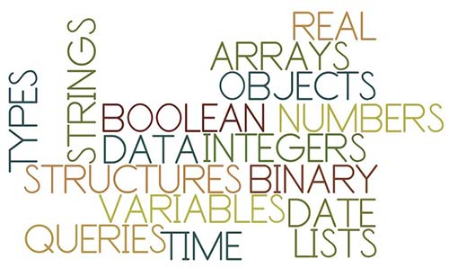

¿Quieres tener tu parte en el gran festín del desarrollo móvil y experimentar las tecnologías más populares y sorprendentes?Joven, tienes buen ojo, ¿eh?
Sin duda, el desarrollo móvil estará en pleno auge ahora y en los próximos años. Innumerables puestos de desarrollo están vacantes. Las grandes empresas buscan programadores de todos los niveles: novato, iniciado, intermedio, veterano, experto.Este artículo está dirigido a los novatos: te ayudaré a encontrar tu primer trabajo como desarrollador de iOS.
"¿Por qué debería hacerte caso?"
Puede que digas eso. Es una pregunta—Si un novato da consejos al azar, lo mejor es no escucharlo.
No soy un gurú, ni siquiera soyespecialmenteexperimentado como desarrollador de iOS, pero conozco el mercado lo suficiente como para poder ayudarte.
Al principio era desarrollador independiente y tenía varias aplicaciones con ingresos no muy altos (pero suficientes para cubrir mis necesidades básicas y dedicarme de lleno al desarrollo). Después me uní a una empresa como desarrollador junior de iOS y, por fin, pude dedicarme por completo a hacer aplicaciones sin preocuparme por qué comería al día siguiente. Si quisiera, podría trabajar en una empresa y vivir sin preocupaciones económicas (pero quizás no encaje conmigo: en mis venas corre sangre emprendedora).
Ahora, basta de charla y hagamos algo.¿Cómo te conviertes en un desarrollador de iOS?
1. Compra un Mac (si no tienes iPhone, también tendrás que vender un riñón).

El desarrollo de iOS requiere un Mac.
Bueno, en realidad puedes conformarte con una alternativa inferior (por ejemplo, hackintosh o Mac in Cloud), pero escucha mi consejo sincero:Para un desarrollador de iOS, el Mac será tu arma principal.En general, no necesitas desangrarte comprando el equipo más nuevo, más rápido y más caro, pero al menos necesitas algo llamadoMaceso. Por supuesto, si eres un pequeño magnate y quieres comprar un buen dispositivo de entrada, entoncesconsidera el Mac Mini—puede ser el modelo con mejor relación calidad-precio. Si, como yo, buscas portabilidad, entonces compra unAir—especialmente la versión de pantalla grande. Tampoco es necesario comprar uno nuevo; conseguir uno de segunda mano en eBay también es estupendo.
2. Instala Xcode.

Ahora que tienes un Mac flamante (un buen Mac de segunda mano también es casi como nuevo), el siguiente paso es instalar [Xcode], el software más importante para un desarrollador de iOS. Xcode es el IDE (Entorno de Desarrollo Integrado) para desarrollar aplicaciones de iOS. Es gratuito y puedesdescargarlo directamente desde la Mac App Store.. Descárgalo ahora, ¡no te demores!
En Xcode escribirás código, editarás, "dibujarás" tu aplicación en el storyboard, realizarás pruebas unitarias, etc. También necesitarás Xcode para subir aplicaciones a la App Store. Debes familiarizarte con él lo más posible, porque es el software más importante para cualquier desarrollador de iOS.
3. Aprende los fundamentos de programación (quizás lo más difícil).
Ahora llegamos probablemente al paso más difícil:Tienes que empezar a programar directamente.Si ya tienes cierta base de programación, puedes elegir entre Objective-C (un poco más difícil) y Swift (un poco más fácil). No hay mucho que debatir: básicamente son lenguajes de programación orientada a objetos estándar. Pero si nunca has escrito una sola línea de código, no entres en pánico:Aquí tienes dos recursos beneficiosos para principiantes absolutos:
Ry's Objective-C tutorial?—adecuado para los amantes de Objective-C que gustan de lo "tradicional". No necesitas aprender Objective-C a la perfección (Swift es la tendencia del futuro <o quizás ya es la tendencia del presente>), pero es mejor que conozcas los fundamentos y puedas leer código escrito en él.
Swift language guide, proporcionado oficialmente por Apple: es la mejor referencia y material de aprendizaje para Swift. Lo que produce Apple, siempre es de calidad.
Por supuesto, no tienes que entender todo a fondo,ya profundizarás en ello cuando tengas más experiencia.Pero debes comprender bien conceptos como variables, punteros, clases, tipos de datos y bucles. De esta manera, tu aprendizaje futuro fluirá sin obstáculos.
4. Sigue tutoriales y haz lo mismo.
A partir de este paso, por fin harás algo útil. Echa un vistazo a estos sitios web:
AppCoda—para principiantes, quizás sea el mejor punto de partida. Puedes encontrar una gran cantidad de tutoriales diferentes, todos con explicaciones muy detalladas. ¡Asegúrate de revisarlos todos!
Ray Wenderlich—otro sitio web útil, con una enorme base de datos de tutoriales de desarrollo de iOS. Ve aprendiendo paso a paso de ellos.
Pero no te limites a estos sitios y tutoriales. ¡Sigue adelante! Desarrolla una aplicación de calculadora. Luego una aplicación del clima. Luego una aplicación de conversión de divisas. Una aplicación de música. ¿Lo ves?Siempre que puedas encontrar tutoriales relacionados, hazlos todos.
Sigue aprendiendo a hacer aplicaciones con tutoriales hasta que sientas que dominas Xcode y el lenguaje de programación (el Objective-C o Swift que hayas elegido). En ese momento, continuamos:
5. Empieza a desarrollar tu propia aplicación.

OK, estamos entrando cada vez más en materia.Ahora vas a empezar a desarrollar tu propia aplicación, que se convertirá en tu arma secreta para futuras entrevistas.
¡No tengas miedo! No es que te pidan desarrollar Facebook. Tenemos que empezar desde un puesto junior, ¿verdad? En un puesto junior, puedes aprender mucho de tus compañeros. Ser demasiado ambicioso no sirve de nada; no puedes convertirte de repente en un experto con cinco años de experiencia.
Por lo tanto, mantén la calma y piensa en qué área del desarrollo de iOS eres mejor actualmente.
¿Quizás has desarrollado una aplicación relacionada con redes? ¿Quizás has estudiado UIKit y eres muy bueno creando interfaces de usuario complejas? ¿O quizás has desarrollado una aplicación de reproductor de música y te gusta el audio de iOS? Tienes que aprovechar tus intereses y conocimientos como base para desarrollar tu aplicación. Escribe un código limpio,con estiloy que funcione bien.
6. Durante este tiempo, espero que también intentes aprender todo lo que puedas sobre conocimientos generales de desarrollo de software.

El hecho de que estés leyendo este artículo indica en cierta medida que no planeas estudiar informática en la universidad. ¡La buena noticia es que no necesitas hacerlo!
Puedes encender tu ordenador en casa y aprender muchos cursos sobre ciencias de la computación, programación, ingeniería de software, etc.
Por supuesto, esto no se compara con un título, pero es suficiente para el desarrollo de iOS. ¿Ves la imagen de arriba? Lee el texto que contiene. No te daré los enlaces en bandeja:La búsqueda de información es una de las habilidades más importantes de un desarrollador.Empieza a entrenarla. Google es tu mejor maestro y amigo.
7. Termina la aplicación.

Has estado concentrado en aprender y desarrollar aplicaciones durante días, semanas, meses... Amigo, ya deberías tener una aplicación decente.La aplicación es tu currículum.—debes esforzarte al máximo. O mejor dicho, entregarlo todo. ¿Qué esperan ver las empresas en tu aplicación? Aquí tienes algunas sugerencias:
Buen funcionamientode la aplicación.
Código limpio.
Estructura del código: clases pequeñas, nombres de variables apropiados, buena organización de archivos en Xcode, etc.
Uso del storyboard (si puedes usar tanto el storyboard como programar la interfaz de usuario a mano, entonces eres increíble).
Uso de CocoaPods.
Algunas pruebas unitarias simples.
Uso de bibliotecas de terceros (por ejemplo, algunos proyectos de código abierto en GitHub; esto será un gran punto a favor, porque en el trabajo real es muy útil).
Por supuesto, todo depende de qué tipo de trabajo y de empresa quieras buscar, pero en general,si aprendes bien lo anterior, podrás recorrer el mundo sin miedo.。
Bien, ahora tienes tu propia aplicación alucinante. Siguiente paso:
8. Publica la aplicación en la App Store.

Eh, tengo que aclarar algo:Este paso no es obligatorio, porque requiere una cuenta de desarrollador, y esa cuenta cuesta 99 dólares al año, lo que muy probablemente hará que tus gastos superen a tus ingresos.
Publicar o no publicar, esa es la cuestión... Tú decides. Sin embargo, si logras publicarla, muchas empresas lo considerarán un gran punto a favor.
Tener tu propia aplicación en la App Store significa que estás familiarizado con el proceso de publicación de aplicaciones,que conoces las restricciones de Apple sobre las aplicaciones (y no son pocas), y que conoces los requisitos de publicación más allá de la propia aplicación (como la descripción, las palabras clave, las capturas de pantalla, el video promocional, etc.).
Puedes elegir omitir este paso, pero te recomiendo encarecidamente que lo intentes (mi primer trabajo probablemente lo conseguí gracias a mi aplicación en la App Store).
9. Sube la aplicación a GitHub.

GitHubEs una plataforma social cuya función principal es compartir código fuente (hay otra plataforma similar pero no tan popular como GitHub:Bitbucket）。
Puedes subir código fuente (configurándolo como público o privado), puedes ver el código de otras personas y contribuir a proyectos de código abierto. GitHub se usa ampliamente; incluso si siempre has sido un desarrollador independiente, puedes beneficiarte mucho de él:Puedes organizar mejor tu código y obtener posiblemente la mejor copia de seguridad.
Pero, ¿por qué deberías subir tu aplicación? Muy sencillo:Para mostrar el código fuente a tu entrevistador.
Deja de enviar código por correo electrónico. Sé sensato, no estamos en los años 90.
10. ¡Contacta con las empresas que te interesen!
圆梦时刻到——Ahora, ¡ya estás listo para aceptar tu primer trabajo de desarrollo de iOS!Puede que empieces como pasante o en un puesto junior, eso no importa—Lo importante es que ahora tienes la capacidad de encontrar tu primer trabajo.Bueno, todo comienzo es difícil, luego irá mejor.
Así que, prepara tu currículum, encuentra la empresa que deseas y ¡desarrolla aplicaciones con ellos!
Fuente: http://www.cocoachina.com/ios/20150617/12165.html
Haz clic para compartir notas
<p style="font-size:14px;">¡La nota debe ser una extensión del contenido de este artículo!</p><br> <p style="font-size:12px;"><a href="../tougao.html" target="_blank">Para enviar artículos, haz clic aquí</a></p> <p style="font-size:14px;"><a href="./runoob-user-test-intro.html" target="_blank">Cómo obtener el código de invitación de registro</a></p> <h3 class="text-muted"><i class="fa fa-info-circle" aria-hidden="true"></i> Antes de compartir notas debes <a href=".." class="runoob-pop">iniciar sesión</a>!</h3> <p><a href="./runoob-user-test-intro.html" target="_blank">Cómo obtener el código de invitación de registro</a></p>